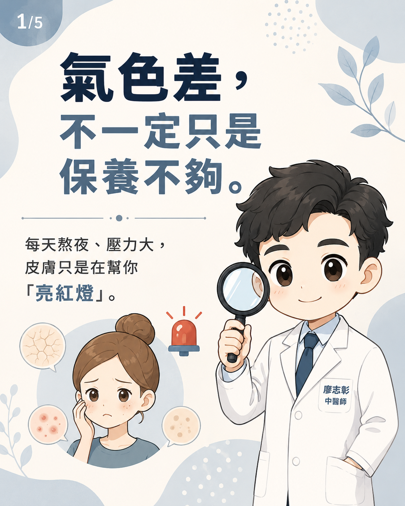
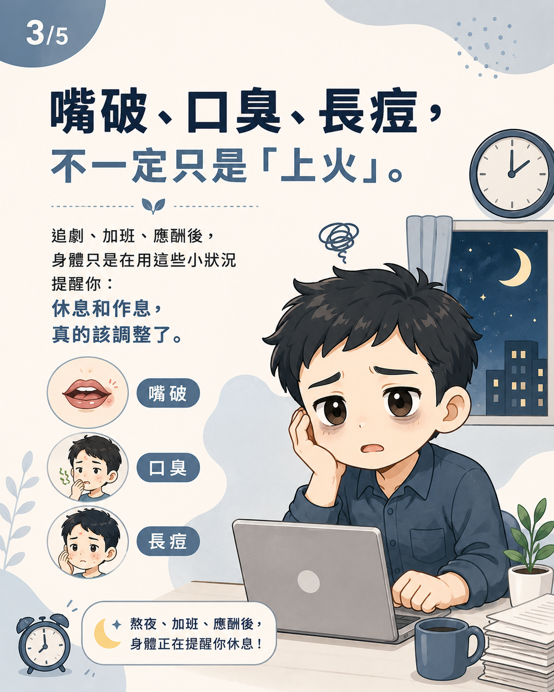
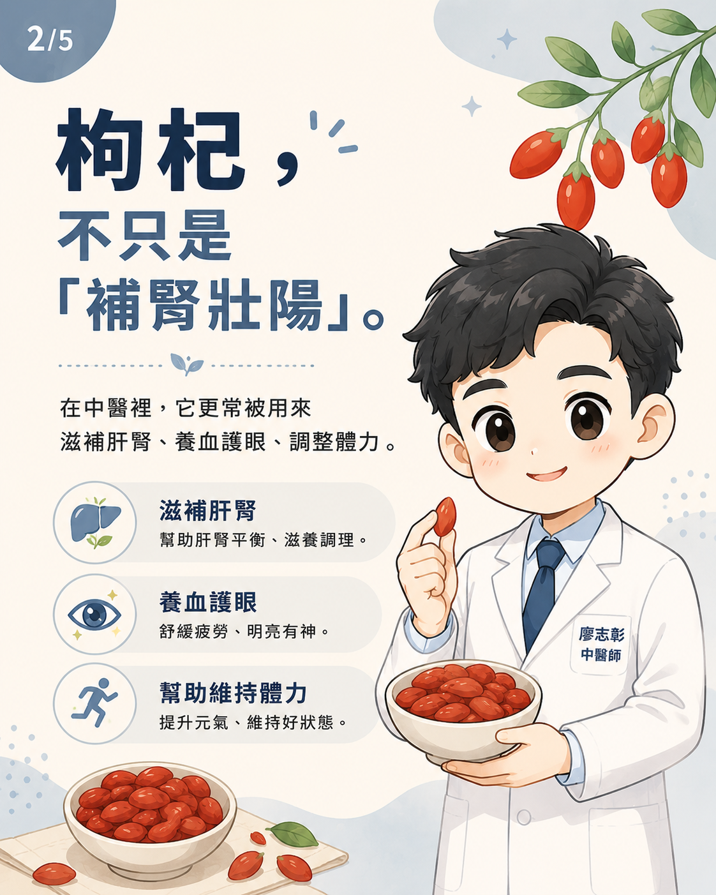
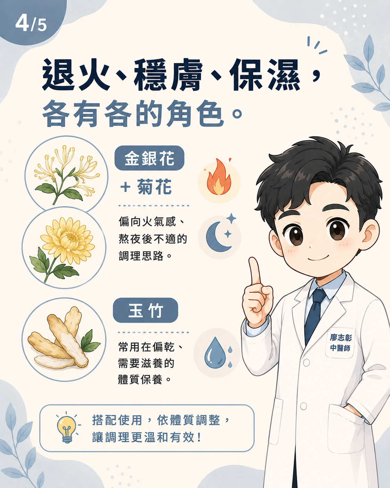
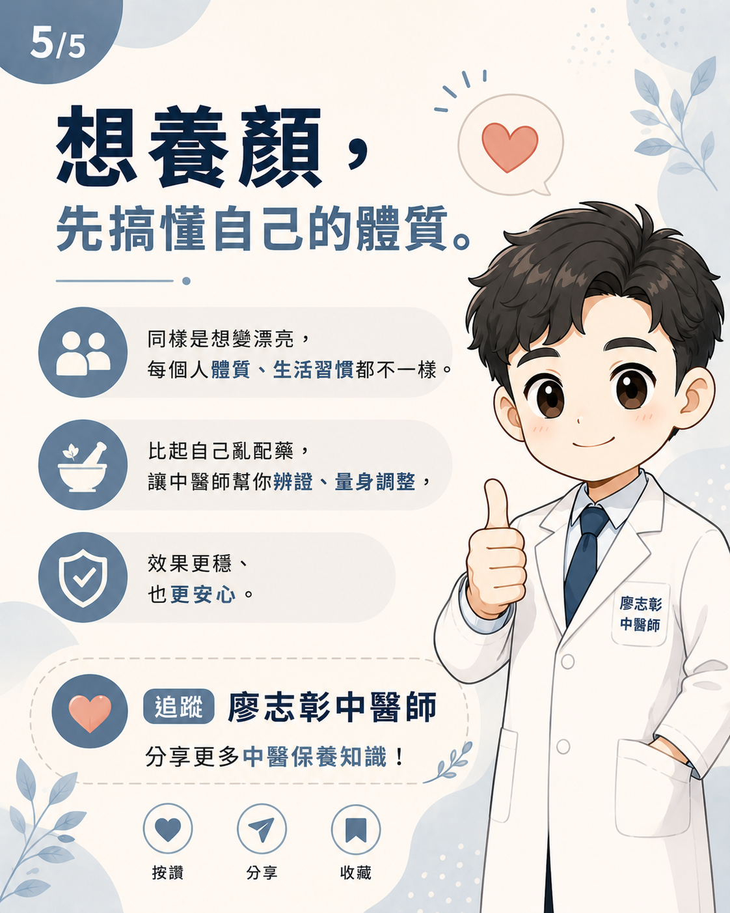

想養顏，先搞懂自己的體質
很多人一聽到「枸杞」，腦中立刻浮現補腎、壯陽的印象。但在中醫理論中，枸杞更常被用來滋補肝腎、養血明目、調整體力與氣血狀態。氣色差不一定只是保養不夠，也可能是身體長期熬夜、壓力、氣血不足或火氣偏盛的提醒。
中醫養顏不是只追求皮膚表面變亮，而是從內在狀態看起。睡眠、飲食、月經、壓力、排便、眼睛疲勞、嘴破口臭與痘痘，都可能是判斷體質的重要線索。





枸杞：不只是補腎，也常用於肝腎與氣血調理
枸杞在中醫常被歸類為滋補肝腎、益精血的藥食兩用材料。對於長時間用眼、熬夜、疲倦、氣色不佳的人，枸杞常被放進養生茶飲或食療中作為輔助調理。
從營養角度看，枸杞含有類胡蘿蔔素、多醣體與多種植化素，因此常被討論在抗氧化與日常保養中的角色。不過，這不代表每個人都適合天天大量吃枸杞。若本身火氣明顯、正在感冒發熱、腹瀉、腸胃容易脹，仍建議先由醫師評估。
熬夜族常見困擾：嘴破、口臭、便秘、痘痘
追劇、加班、應酬、喝酒、睡眠不足後，有些人容易嘴破、口臭、便秘或長痘。這些狀況常被簡單稱為「上火」，但在中醫看來，背後可能包含睡眠不足、壓力、飲食油膩辛辣、腸胃積熱或濕熱體質等不同原因。
金銀花與菊花常被用於偏熱性、火氣感明顯的茶飲搭配。金銀花在中醫常用於清熱解毒，菊花則常用於清肝、明目與舒緩火氣感。但若體質偏寒、容易腹瀉、手腳冰冷，清熱茶飲不宜自行長期大量飲用。
玉竹：偏乾、需要滋養的人常被提到
玉竹在中醫常被歸類為養陰潤燥的藥材，常用於偏乾、口乾、皮膚乾、熬夜後燥熱感較明顯的人。它不是單純的保濕品，而是從體內陰液與津液狀態來思考。
若皮膚乾燥合併熬夜、口乾、眼乾、便秘或容易煩熱，可能不只是外用保濕不足，也可能需要從睡眠、飲水、飲食與體質調理一起處理。
退火、穩膚、保濕，各有各的角色
同樣是想讓氣色變好，不同體質的方向並不一樣。有些人需要補肝腎與氣血，有些人需要清熱，有些人需要滋陰潤燥，也有人其實是壓力與睡眠問題讓皮膚反覆不穩。
- 枸杞：常用於滋補肝腎、養血明目與體力調理
- 金銀花、菊花：常用於偏火氣感、熬夜後不適的調理思路
- 玉竹：常用於偏乾、口乾、皮膚乾與需要滋養的體質
- 睡眠與壓力：會影響氣色、痘痘、嘴破與身體修復
哪些人不建議自行亂搭中藥茶？
即使是常見藥食材料，也不代表每個人都適合。尤其是正在服藥、有慢性病、懷孕哺乳、容易腹瀉、腎臟疾病、免疫疾病或體質特別敏感的人，建議先詢問合格中醫師。
若嘴破、口臭、長痘、便秘、皮膚乾燥反覆出現，也不建議只靠單一茶飲壓症狀。反覆發作通常代表生活型態、睡眠、飲食或體質狀態需要更完整的評估。
中醫養顏，重點是辨證論治
中醫強調辨證論治。即便都是想養顏美容，每個人的體質、生活習慣、睡眠、月經、腸胃與壓力狀態都不同。比起自己亂配茶飲，更建議由中醫師評估後，依體質規劃適合的調理方向。
由內到外的美麗，不只是保養，更是養生。真正穩定的氣色，往往來自睡得好、吃得合適、壓力可調節，並讓身體回到比較平衡的狀態。
延伸閱讀
本文為一般中醫衛教資訊，不能取代醫師診斷。中藥與藥食材料仍需依體質、疾病、用藥與個人狀態評估；若有反覆嘴破、口臭、便秘、痘痘、皮膚乾燥或其他不適，建議由合格中醫師診察。